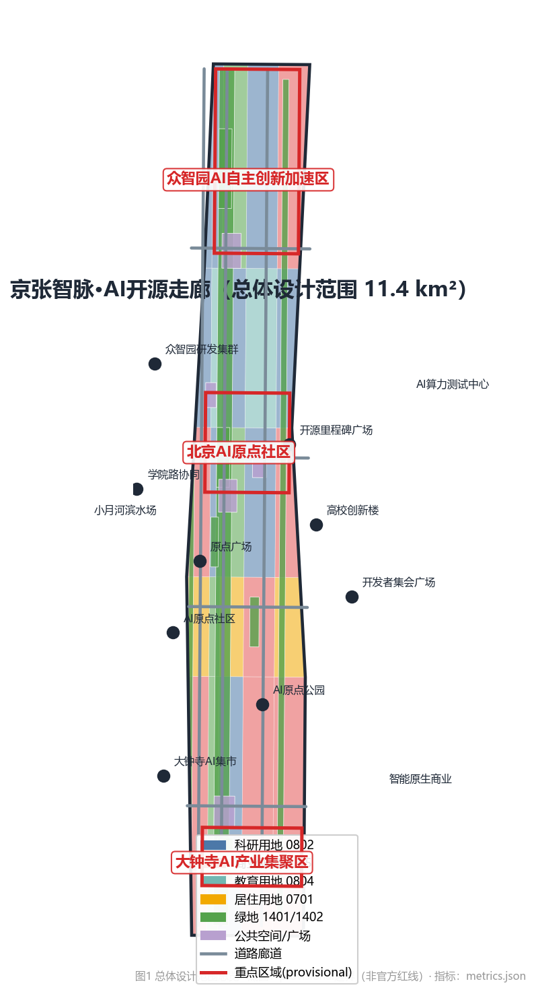
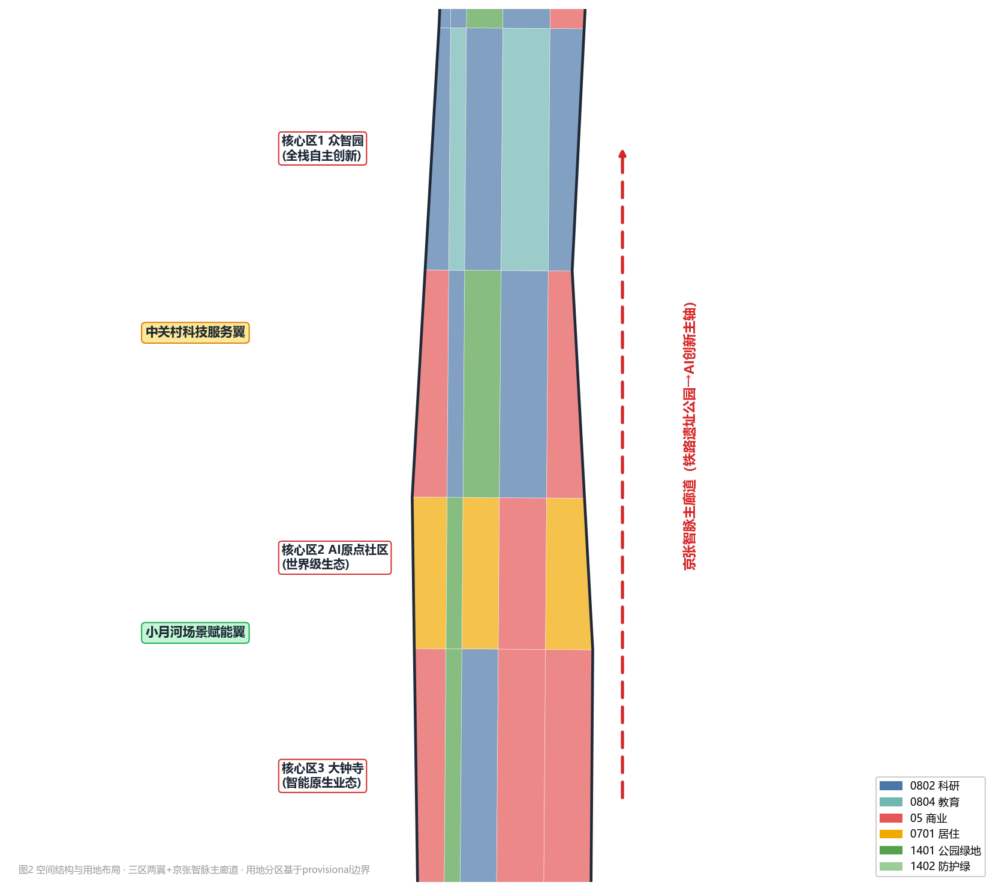
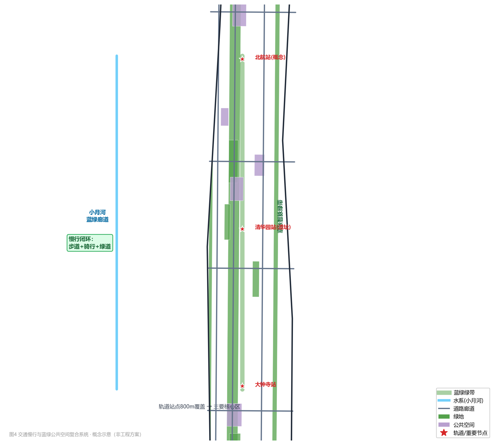

| 区域 | 面积（provisional） | 定位 |
|---|---|---|
| 众智园AI自主创新加速区 | 192.9 万 m² | AI全栈自主创新 |
| 北京AI原点社区 | 104.3 万 m² | 世界级AI创新生态 |
| 大钟寺AI产业集聚区 | 72.0 万 m² | 智能原生新业态 |

京张智脉复合走廊（南北贯通）＋ 4 条东西联络路（东西缝合）＋ 轨道站点 TOD 一体化（概念）＋ 慢行闭环（步道/骑行/绿道）。
概念道路长度：3.4 万 m

一脉（京张智脉绿带）· 两水（小月河/清河）· 多园（8处概念绿地）· 5 处核心公共空间（开源里程碑广场、AI原点广场、大钟寺AI集市、开发者广场、小月河滨水活力场）。
6 处概念建筑组团：大钟寺AI加速器、智能原生商业综合体、AI原点创新社区核心、学院路协同创新楼、众智园全栈研发集群、AI算力服务与测试中心。
概念建筑基底 68.0 万 m²；概念容积率 0.1787（待官方控规确认）。
12 项概念更新项目：新建/改建/公共空间/生态四类，按 P1-P3 分期（369.1 万 m² / 528.5 万 m² / 243.7 万 m²）。
14 个场景节点：大模型评测、AI安全治理沙箱、自动驾驶接驳测试环、数据要素流通沙箱（4 项产业测试验证）+ 开源共创、成果发布、智能商业、AI集市、AI+医疗/教育/交通/公共空间、荣誉墙、端侧算力、AI导览。
用户画像：开发者/创业者/高校师生/投资人/本地居民（含老年）/游客 6 类。
公告任务 1.3/1.4/1.5 全部 17 项 + 智能体任务 agent.1-agent.6 全部覆盖（见 compliance_matrix.json）。
标准：5 项 mandatory 标准全部响应（standard_matrix.json）。设计深度：15 项全部 complete（design_depth_matrix.json）。
官方公告（北京市规自委海淀分局 2026-05-09）· 智能体任务书摘录 · brief/site-package 结构化任务包 · provisional 边界 · 公开生态案例资料。详见 sources.json 与 proposal.md 参考资料。
A-CONTROLS-001：官方控规条件、道路红线、权属、市政与工程约束须由官方附件确认后方可用于法定用途；本方案全部空间结论为概念建议（assumptions.json）。
PASS（确定性校验 / 空间复核 / 视觉打包 / 专业证据）
边界精度：provisional（非官方红线），官方多边形发布后须全量复算（self_check.json）。